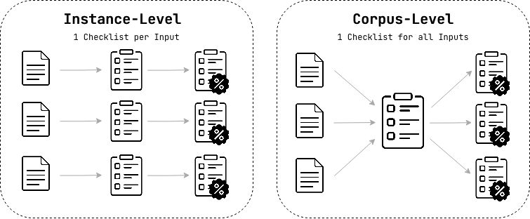

Generators¶
What is a Generator?¶
A generator is the first stage of the checklist evaluation pipeline. It takes evaluation context (an instruction, reference response, feedback, etc.) and produces a checklist — a list of yes/no questions that capture what makes a response good or bad.
For example, given the instruction "Write a haiku about autumn", a generator might produce:
- Does the response follow the 5-7-5 syllable structure?
- Does the response relate to autumn themes?
- Does the response use concrete imagery?
These questions become the criteria against which a scorer later evaluates a target response.
Five Generator Abstractions¶
The library provides 5 generator classes, each representing a distinct reasoning approach. See the Five Generator Abstractions section below for an overview. Each class is customizable via prompt templates, chainable with refiners, and pairable with scorers.
Instance-Level: One Checklist Per Input¶
Instance-level generators create a tailored checklist for each individual input. The criteria adapt to the specific task: a haiku prompt gets questions about syllable structure, while a code prompt gets questions about correctness and efficiency.
-
DirectGenerator— Direct inference: The LLM reads a prompt template with the evaluation context and directly produces checklist questions. Different prompt templates (via built-in pipelines) specialize it for different methods:tick,rocketeval,rlcf_direct. -
ContrastiveGenerator— Counterfactual reasoning: Derives criteria by analyzing what distinguishes good from bad responses. Can auto-generate candidate responses of varying quality (RLCF pipelines), or work with externally provided preference data like chosen/rejected pairs or ranked lists (OpenRubrics CRG pipelines). Used byrlcf_candidate,rlcf_candidates_only,openrubrics_pairwise, andopenrubrics_listwisepipelines.
Corpus-Level: One Checklist Per Dataset¶
Corpus-level generators produce a shared checklist from dataset-wide quality signals, such as reviewer observations, evaluation dimensions, or think-aloud sessions. Every response in the dataset is then scored against the same criteria.
-
InductiveGenerator— Inductive reasoning (bottom-up): Starts from specific observations (reviewer feedback, quality notes, error reports) and induces general evaluation criteria. Like inductive reasoning, it moves from concrete examples to abstract principles. Has a built-in refinement pipeline (deduplication → tagging → selection). -
DeductiveGenerator— Deductive reasoning (top-down): Starts from abstract evaluation dimensions and sub-dimensions defined by domain experts, then generates specific checklist questions. Like deductive reasoning, it moves from general principles to concrete criteria. Supports augmentation modes (seed, elaboration, diversification, combined) and optional filtering. -
InteractiveGenerator— Protocol analysis: Extracts criteria from think-aloud evaluation sessions where human and LLM evaluators verbalize their reasoning while assessing quality. This approach captures tacit evaluation knowledge that isn't easily expressed as explicit dimensions or feedback. Runs a 5-stage pipeline (component extraction → clustering → key questions → sub-questions → validation).
Terminology
Throughout the library:
input= the instruction, query, or task being evaluatedtarget= the response being evaluated (e.g., an LLM response, an essay)reference= a gold-standard "good" response, sometimes used to help generate the checklist
A visualization of this difference:

Using Instance-Level Generators¶
Custom Prompts¶
The primary way to create an instance-level generator — write your own prompt template:
from autochecklist import DirectGenerator
gen = DirectGenerator(
custom_prompt="Generate yes/no eval questions for:\n\n{input}",
model="openai/gpt-5-mini",
)
checklist = gen.generate(input="Write a haiku about autumn.")
print(checklist.to_text())
See Custom Prompts for the full guide (file-based prompts, placeholders, custom scorers, registration).
DirectGenerator¶
Use a built-in pipeline via method_name:
from autochecklist import DirectGenerator
gen = DirectGenerator(method_name="tick", model="openai/gpt-5-mini")
checklist = gen.generate(input="Write a haiku about autumn.")
print(checklist.to_text())
ContrastiveGenerator: Candidate Options¶
The ContrastiveGenerator (used by rlcf_candidate and rlcf_candidates_only) works by comparing candidate responses of varying quality. You have three options for providing candidates:
Auto-generate candidates (default) — the generator creates them using its LLM:
from autochecklist import pipeline
pipe = pipeline("rlcf_candidate", generator_model="openai/gpt-5-mini", scorer_model="openai/gpt-5-mini")
result = pipe(input="...", target="...", reference="...")
# Candidates generated automatically
Pass candidates manually:
result = pipe(input="...", target="...", reference="...",
candidates=["response A", "response B", "response C"])
Use a separate (cheaper) model for candidate generation:
pipe = pipeline("rlcf_candidate", generator_model="openai/gpt-5-mini",
generator_kwargs={"candidate_provider": "vllm",
"candidate_base_url": "http://gpu:8000/v1"})
Use multiple models for diverse candidates (paper-faithful approach):
Candidates can be generated using different "worker" models to get naturally diverse responses. To replicate this, instantiate the generator directly and pass it to ChecklistPipeline:
from autochecklist import ContrastiveGenerator, ChecklistPipeline
gen = ContrastiveGenerator(
method_name="rlcf_candidate",
model="openai/gpt-5-mini",
candidate_models=["openai/gpt-5-mini", "anthropic/claude-3-haiku", "meta-llama/llama-3-8b"],
)
pipe = ChecklistPipeline(generator=gen, scorer="weighted", scorer_model="openai/gpt-5-mini")
result = pipe(input="...", target="...", reference="...")
How Candidate Generation Works
The strategy depends on whether you provide one or multiple candidate_models:
- Multiple models (paper-faithful): Each model generates exactly 1 response at temperature 0.7. Diversity comes from model differences.
- Single model (convenience fallback): Generates
num_candidatesresponses (default 4) at temperature 0.9. Diversity comes from high-temperature sampling.
When using pipeline() with generator_kwargs={"candidate_provider": ...}, a single model is used. For multi-model candidates, instantiate ContrastiveGenerator directly and pass it to ChecklistPipeline.
ContrastiveGenerator: OpenRubrics CRG (Preference Data)¶
The OpenRubrics pipelines use ContrastiveGenerator with generate_candidates=False — instead of auto-generating candidates, you provide preference data directly:
Pairwise — chosen vs rejected:
pipe = pipeline("openrubrics_pairwise", generator_model="openai/gpt-5-mini", scorer_model="openai/gpt-5-mini")
result = pipe(
input="Explain photosynthesis.",
target="Response to evaluate...",
candidates={"chosen": "Photosynthesis is the process by which plants convert...",
"rejected": "Plants use sunlight to grow."},
)
Listwise — ranked responses (best to worst):
pipe = pipeline("openrubrics_listwise", generator_model="openai/gpt-5-mini", scorer_model="openai/gpt-5-mini")
result = pipe(
input="Explain photosynthesis.",
target="Response to evaluate...",
candidates=["Best response...", "Good response...", "Weak response..."],
)
Items are categorized as hard_rule or principle — use checklist.by_category() to split them.
See Supported Pipelines for full details on each method's inputs and behavior.
Using Corpus-Level Generators¶
InductiveGenerator¶
Derives checklist questions from a list of reviewer feedback comments. Internally runs a refinement pipeline (deduplication → tagging → selection) that you can selectively disable:
from autochecklist import InductiveGenerator
gen = InductiveGenerator(model="openai/gpt-5-mini")
checklist = gen.generate(
observations=["Response was too long", "Missing examples", "Good structure"],
domain="technical documentation",
skip_dedup=False, # default: run deduplication
skip_tagging=False, # default: run tagging
skip_selection=False, # default: run selection
)
DeductiveGenerator¶
Creates questions from structured evaluation dimensions. Supports three augmentation modes that control how many questions are generated per sub-dimension:
from autochecklist import DeductiveGenerator
from autochecklist.models import DeductiveInput
dims = [
DeductiveInput(
name="Coherence",
definition="Logical flow and consistency of ideas",
sub_dimensions=["Sentence transitions", "Paragraph structure"]
)
]
gen = DeductiveGenerator(model="openai/gpt-5-mini", augmentation_mode="elaboration")
checklist = gen.generate(dimensions=dims, apply_filtering=True)
Augmentation modes: "seed" (1–3 questions/sub-dimension), "elaboration" (3–5 detailed questions), "diversification" (alternative framings), "combined" (both elaboration and diversification from seeds — paper-faithful).
InteractiveGenerator¶
Extracts evaluation criteria from think-aloud data through a 5-stage pipeline (component extraction → attribute clustering → key questions → sub-questions → validation):
from autochecklist import InteractiveGenerator
from autochecklist.models import InteractiveInput
data = [
InteractiveInput(
source="human",
dimension="Helpfulness",
attributes=["addresses the question", "provides examples", "clear explanation"]
)
]
gen = InteractiveGenerator(model="openai/gpt-5-mini", max_components=5)
checklist = gen.generate(inputs=data)
Grouping by Category¶
Corpus-level generators that produce items across multiple dimensions (like DeductiveGenerator and InteractiveGenerator) set category on each ChecklistItem. Use by_category() to split the checklist into per-dimension sub-checklists:
checklist = gen.generate(dimensions=dims)
# Split into sub-checklists by dimension
groups = checklist.by_category()
for name, sub_cl in groups.items():
print(f"{name}: {len(sub_cl)} items")
# Score each dimension separately
from autochecklist import ChecklistScorer
scorer = ChecklistScorer(mode="batch", model="openai/gpt-5-mini")
for name, sub_cl in groups.items():
score = scorer.score(sub_cl, target="...", input="...")
print(f"{name}: {score.pass_rate:.0%}")
DeductiveGenerator also has a convenience method:
Checklists can be saved and loaded for later use:
Built-in Refinement
Some corpus-level generators have built-in refinement stages that use the same components available as standalone refiners. See Supported Pipelines for details on each generator's internal pipeline.